СП 487.1325800.2020 «Гидроаэродромы. Правила проектирования»
О документе: разработчики, утверждение, регистрация, ключевые слова
1 ИСПОЛНИТЕЛИ - ЗАО «ПРОМТРАНСНИИПРОЕКТ», АО «НТК «АЭРОТЕХНИЧЕСКИЙ ЦЕНТР»
2 ВНЕСЕН Техническим комитетом по стандартизации ТК 465 «Строительство»
3 ПОДГОТОВЛЕН к утверждению Департаментом градостроительной деятельности и архитектуры Министерства строительства и жилищнокоммунального хозяйства Российской Федерации (Минстрой России)
4 УТВЕРЖДЕН приказом Министерства строительства и жилищнокоммунального хозяйства Российской Федерации от 17 декабря 2020 г. № 803/пр и введен в действие с 18 июня 2021 г.
5 ЗАРЕГИСТРИРОВАН Федеральным агентством по техническому регулированию и метрологии (Росстандарт)
6 ВВЕДЕН ВПЕРВЫЕ
В случае пересмотра (замены) или отмены настоящего свода правил соответствующее уведомление будет опубликовано в установленном порядке. Соответствующая информация, уведомление и тексты размещаются также в информационной системе общего пользования - на официальном сайте разработчика (Минстрой России) в сети Интернет
© Минстрой России, 2020
Настоящий нормативный документ не может быть полностью или частично воспроизведен, тиражирован и распространен в качестве официального издания на территории Российской Федерации без разрешения Минстроя России
Дата введения - 2021-06-18
УДК [625.717]
ОКС 93.120
Ключевые слова: акватория гидроаэродрома, гидроаэродром, гидроспуск, контрольная точка гидроаэродрома, летная полоса, маркировочные знаки, полоса воздушных подходов, посадочная площадка, район гидроаэродрома, свободная зона, территория служебно-технической застройки
Руководитель организации-разработчика ЗАО «ПРОМТРАНСНИИПРОЕКТ»
Исполнительный директор
А.Ю. Эглескалн
Руководитель
Зам. директора
Л.А. Андреева
разработки
по науке
Исполнитель
Начальник отдела
И.П. Потапов
комплексных
исследований,
стандартизации и логистики
Введение
Настоящий свод правил разработан в целях обеспечения соблюдения требований Федерального закона от 30 декабря 2009 г. № 384-ФЗ «Технический регламент о безопасности зданий и сооружений».
Кроме того, применение настоящего свода правил обеспечивает соблюдение федеральных законов от 19 марта 1997 г. № 60-ФЗ «Воздушный кодекс Российской Федерации», от 3 июня 2006 г. № 74-ФЗ «Водный кодекс Российской Федерации», постановления Правительства Российской Федерации от 30 декабря 2006 г. № 882 «Об утверждении Правил использования поверхностных водных объектов для взлета, посадки воздушных судов».
Свод правил разработан авторским коллективом: ЗАО «ПРОМТРАНСНИИПРОЕКТ» (руководитель темы - д-р техн. наук Л.А. Андреева , И.П. Потапов, И.В. Музыкин, А.О. Иванова ), АО «НТК «АЭРОТЕХНИЧЕСКИЙ ЦЕНТР» (руководитель темы - канд. техн. наук В.Н. Вторушин , канд. эконом. наук И.Г. Лобов , канд. техн. наук Д.А. Смирнов , А.Е. Григорьев, Е.П. Жаров ).
Правила проектирования
Water aerodromes.
Rules of design
1Область применения
2Нормативные ссылки
В настоящем своде правил использованы нормативные ссылки на следующие документы:
ГОСТ 26600-98 Знаки навигационные внутренних судоходных путей. Общие технические условия
[ГОСТ 22283-2014 Шум авиационный. Допустимые уровни шума на территории жилой застройки и методы его измерения](http://docs.cntd.ru/document/1200112157)
ГОСТ IEC 61140-2012 Защита от поражения электрическим током. Общие положения безопасности установок и оборудования
ГОСТ Р 50571.5.54-2013/МЭК 60364-5-54:2011 Электроустановки низковольтные. Часть 5-54. Выбор и монтаж электрооборудования. Заземляющие устройства, защитные проводники и защитные проводники уравнивания потенциалов
ГОСТ Р 50571.22-2000 (МЭК 60364-7-707-84) Электроустановки зданий. Часть 7. Требования к специальным электроустановкам. Раздел 707. Заземление оборудования обработки информации
СП 10.13130.2020 Системы противопожарной защиты. Внутренний противопожарный водопровод. Нормы и правила проектирования
СП 30.13330.2016 «СНиП 2.04.01-85* Внутренний водопровод и канализация зданий» (с изменением № 1)
СП 31.13330.2012 «СНиП 2.04.02-84* Водоснабжение. Наружные сети и сооружения» (с изменениями № 1, № 2, № 3, № 4, № 5)
СП 32.13330.2018 «СНиП 2.04.03-85 Канализация. Наружные сети и сооружения» (с изменением № 1)
СП 34.13330.2012 «СНиП 2.05.02-85* Автомобильные дороги» (с изменениями № 1, № 2)
СП 37.13330.2012 «СНиП 2.05.07-91* Промышленный транспорт» (с изменениями № 1, № 2, № 3)
- СП 47.13330.2016 «СНиП 11-02-96 Инженерные изыскания для строительства. Основные положения»
- СП 52.13330.2016 «СНиП 23-05-95* Естественное и искусственное освещение» (с изменением № 1)
- СП 60.13330.2016 «СНиП 41-01-2003 Отопление, вентиляция и кондиционирование воздуха» (с изменением № 1)
СП 64.13330.2017 «СНиП II-25-80 Деревянные конструкции» (с изменениями № 1, № 2)
СП 76.13330.2016 «СНиП 3.05.06-85 Электротехнические устройства»
СП 80.13330.2016 «СНиП 3.07.01-85 Гидротехнические сооружения речные»
СП 89.13330.2016 «СНиП II-35-76 Котельные установки»
СП 118.13330.2012 «СНиП 31-06-2009 Общественные здания и сооружения» (с изменениями № 1, № 2, № 3, № 4)
СП 121.13330.2019 «СНиП 32-03-96 Аэродромы»
СП 124.13330.2012 «СНиП 41-02-2003 Тепловые сети» (с изменением № 1)
СП 132.13330.2011 Обеспечение антитеррористической защищенности зданий и сооружений. Общие требования проектирования
СП 155.13130.2014 Склады нефти и нефтепродуктов. Требования пожарной безопасности (с изменением № 1)
СП 256.1325800.2016 Электроустановки жилых и общественных зданий. Правила проектирования и монтажа (с изменениями № 1, № 2, № 3)
СП 277.1325800.2016 Сооружения морские берегозащитные. Правила проектирования
СП 287.1325800.2016 Сооружения морские причальные. Правила проектирования и строительства
СП 438.1325800.2019 Инженерные изыскания при планировке территорий. Общие требования
СП 446.1325800.2019 Инженерно-геологические изыскания для строительства. Общие правила производства работ
СП 478.1325800.2019 Здания и комплексы аэровокзальные. Правила проектирования
СанПиН 2.2.1/2.1.1.1278-03 Гигиенические требования к естественному, искусственному и совмещенному освещению жилых и общественных зданий
Примечание - При пользовании настоящим сводом правил целесообразно проверить действие ссылочных документов в информационной системе общего пользования - на официальном сайте федерального органа исполнительной власти в сфере стандартизации в сети Интернет или по ежегодному информационному указателю «Национальные стандарты», который опубликован по состоянию на 1 января текущего года, и по выпускам ежемесячного информационного указателя «Национальные стандарты» за текущий год. Если заменен ссылочный документ, на который дана недатированная ссылка, то рекомендуется использовать действующую версию этого документа с учетом всех внесенных в данную версию изменений. Если заменен ссылочный документ, на который дана датированная ссылка, то рекомендуется использовать версию этого документа с указанным выше годом утверждения (принятия). Если после утверждения настоящего свода правил в ссылочный документ, на который дана датированная ссылка, внесено изменение, затрагивающее положение, на которое дана ссылка, то это положение рекомендуется применять без учета данного изменения. Если ссылочный документ отменен без замены, то положение, в котором дана ссылка на него, рекомендуется применять в части, не затрагивающей эту ссылку. Сведения о действии сводов правил целесообразно проверить в Федеральном информационном фонде стандартов .
3Термины и определения
В настоящем своде правил применены следующие термины с соответствующими определениями:
- 3.1акватория гидроаэродрома
- Водный участок, на котором выполняются операции взлета, посадки, руления, стоянки и обслуживания гидросамолетов на плаву.
- 3.2гидроаэродром
- Участок акватории и участок земли с расположенными на нем зданиями, сооружениями и оборудованием, предназначенный для взлета, посадки, руления и стоянки воздушных судов.
- 3.3гидроспуск
- Сооружение, предназначенное для подъема гидросамолетов из воды и спуска их на воду выруливанием на собственных двигателях, с использованием подъемно-спусковой лебедки, вспомогательных плавучих средств или буксировкой тягачом.
- 3.4контрольная точка гидроаэродрома; КТГа
- Точка, определяющая географическое местоположение гидроаэродрома.
- 3.5летная полоса ( здесь )
- Часть акватории, предназначенная для взлета и посадки гидросамолетов.
- 3.6посадочная площадка; ПП
- Участок земли, льда, поверхности сооружения, в том числе поверхности плавучего сооружения, либо акватория, предназначенные для взлета, посадки или для взлета, посадки, руления и стоянки воздушных судов. [3, статья 40, пункт 7].
- 3.7летный бассейн
- Часть акватории, включающая в себя летную полосу и участки маневрирования.
- 3.8район гидроаэродрома
- Часть воздушного пространства установленных размеров, предназначенная для организации выполнения полетов, а также расположенный под ней участок водной и земной поверхности.
- 3.9свободная зона; СЗ
- Находящийся под контролем служб аэропорта прямоугольный участок земной или водной поверхности, примыкающий к концу располагаемой дистанции разбега, выбранный или подготовленный в качестве участка, пригодного для первоначального набора высоты воздушным судном до установленного значения.Источник: 11, приложение 1
- 3.10территория служебно-технической застройки
- Участок суши, на котором размещают здания и сооружения, необходимые для обслуживания гидросамолетов. Примечание - Если гидроаэродром предназначен для пассажирских перевозок и, следовательно, становится гидроаэропортом, то на территории служебно-технической застройки размещают здания и сооружения для обслуживания пассажиров.
4Общие положения
- а) гнездовых колоний птиц в прибрежной зоне, охранный статус места расположения колоний (заповедник, заказник); б) деревьев и пней, оставшихся после затопления искусственного водоема; в) жесткой растительности у берегов (камыш, тростник, рогоз).
4.3.3.1 Акватории на реках должны:
- иметь фарватеры для движения плавсредств, обслуживающих гидросамолеты, а в случаях пересечения акватории водными трассами фарватеры для соответствующих судов;
- располагать рабочий бассейн на удалении не менее двух размахов крыла гидросамолета от фарватера реки;
- располагаться в непосредственной близости к береговой полосе.
- 4.3.3.2 Кроме того, в акватории гидроаэродромов не должно быть:
- наносных участков замеления;
- заброшенных элементов промышленного использования (паромные переправы, мачты линий электропередачи, затопленный лес);
- остатков лесосплава;
- интенсивного движения судов;
- банок, камней, рифов, отмелей с пляжами;
- естественных и искусственных препятствий на прилегающей местности, затрудняющих взлет и заход на посадку;
- мест постоянного гнездовья водоплавающих птиц.
СП 1325800.2020
д) геологические и гидрогеологические (геологические профили, физико-механические характеристики грунтов основания и засыпки, сведения о грунтовых водах и их агрессивности); е) данные о сейсмичности (с учетом сейсмического микрорайонирования), а также карстовых, оползневых и просадочных явлениях на участке строительства.
5Классификация гидроаэродромов
- длина ЛП;
- вид водоема размещения;
- время действия;
- степень оснащенности радиотехническими средствами;
- степень обозначения на поверхности.
Класс ЛП определяется длиной ЛП в стандартных условиях, приведенной в таблице 5.1.
Таблица 5.1 Длина летной полосы в стандартных условиях
| Класс ЛП | Класс ЛП | Класс ЛП | Класс ЛП | Класс ЛП | Класс ЛП | |
|---|---|---|---|---|---|---|
| Показатель | А | Б | В | Г | Д | Е |
| Минимальная длина ЛП в стандартных условиях, м | 3500 | 2900 | 2100 | 1600 | 1300 | Менее 1000 |
Примечание - Стандартные условия характеризуются сочетанием следующих условий: стандартные атмосферные условия (температура воздуха 15 °С, атмосферное давление 101 325 Па, относительная влажность воздуха 0 %), нулевое превышение над уровнем моря, отсутствие ветра.
- морские;
- озерные;
- речные.
- на постоянно действующие с капитальными сооружениями и стационарным оборудованием;
- временные без сооружений или с сооружениями временного (переносного) типа, предназначенные для периодического базирования воздушных судов (ВС).
- с оборудованной летной полосой, обеспечивающие заходы ВС на посадку по приборам;
- с необорудованной летной полосой, обеспечивающие только визуальные заходы ВС на посадку.
- обозначенные маркерными знаками или светосигнальным оборудованием, расположенным на акватории и (или) на прибрежной зоне территории;
- не обозначенные маркерными знаками или светосигнальным оборудованием.
6Общие требования к проектированию гидроаэродромов
СП 1325800.2020
- длины с учетом маневрирования и обеспечения взлета ВС с одним отказавшим двигателем, а также необходимого расстояния от отметки минимальной допустимой глубины;
- ширины с учетом обеспечения взлета и посадки одиночного ВС, полосы руления, якорных стоянок.
Размеры акватории в зависимости от класса гидроаэродрома приведены в таблице 6.1.
Таблица 6.1 -Размеры акватории в зависимости от класса гидроаэродрома
| Размеры | Классы гидроаэродромов | Классы гидроаэродромов | Классы гидроаэродромов | Классы гидроаэродромов | Классы гидроаэродромов | Классы гидроаэродромов |
|---|---|---|---|---|---|---|
| акватории | А | Б | В | Г | Д | Е |
| Длина, м, не менее | 3800 | 3100 | 2300 | 1800 | 1500 | 1100 |
| Ширина, м | 400-750 | 250-700 | 200-400 | 150-200 | 100-150 | Менее 100 |
| Глубина, м, не менее | 3,5 | 2,6 | 2,0 | 1,8 | 1,5 | 1,5 |
Концевые участки маневрирования (разворотов) должны иметь диаметр, равный не менее чем двум размахам крыла гидросамолета.
Минимальная ширина необорудованной летной полосы должна быть, м, не менее:
200 - для гидроаэродромов класса А;
150 - для гидроаэродромов класса Б;
120 - для гидроаэродромов класса В;
100 - для гидроаэродромов классов Г и Д; менее 100 - для гидроаэродромов класса Е.
Ширина оборудованной ЛП для гидроаэродрома должна быть не менее 200 м.
В случае если течение в пределах ЛП не превышает 1,25 м/с в направлении взлета и посадки, и боковая составляющая течения в любой точке летной полосы не превышает 0,5 м/с, минимальная ширина ЛП может быть уменьшена на 30 м.
Глубина акватории в пределах летного бассейна при низком уровне воды с учетом осадки ВС при максимальном весе и максимальной ветровой волне при движении ВС с убранными шасси должна быть не менее указанной в таблице 6.1.
Минимальную глубину летного бассейна в пределах ЛП для конкретного ВС рассчитывают в соответствии с приложением В.
- не менее 160 - для гидроаэродромов класса А;
- не менее 100 - для гидроаэродромов класса Б;
- не менее 80 - для гидроаэродромов класса В;
- не менее 50 - для гидроаэродромов классов Г и Д;
- менее 50 - для гидроаэродромов класса Е.
Минимально допустимый разрыв между направлениями двустороннего движения ВС составляет 20 м.
СП 1325800.2020
- якорные стоянки;
- причалы для гидросамолетов и катеров различного назначения;
- гидроспуски.
Таблица 6.2 Допустимая высота волн, м
| Место замера высоты волн | Классы гидроаэродромов | Классы гидроаэродромов | Классы гидроаэродромов | Классы гидроаэродромов |
|---|---|---|---|---|
| А | Б | В | Г, Д, Е | |
| У гидроспусков | 1,0 | 0,8 | 0,6 | 0,4 |
| У причалов для ВС: - на неподвижных опорах и на понтонах, примыкающих к берегу | 0,8 | 0,6 | 0,4 | 0,2 |
|---|---|---|---|---|
| - плавучих, не связанных с берегом | 1,0 | 0,8 | 0,6 | 0,3 |
| У якорных стоянок | 2,5 | 1,5 | 1,0 | 0,5 |
Площадь огражденных участков должна быть достаточной для размещения и технического обслуживания ВС. Количество ВС определяется заданием на проектирование или прогнозом интенсивности движения ВС. При определении площади ограждаемых участков акватории в качестве расчетного случая следует принимать подход ВС к сооружениям методом буксировки.
Вход в огражденную часть акватории проектируется так, чтобы ось входа по возможности совпадала с направлением господствующих ветров или не отклонялась бы от него более чем на 60°. Ширина входа должна быть не менее трех размахов крыла гидросамолета.
- границы акватории гидроаэродрома;
- приближение к ЛП;
- начало и конец ЛП;
- боковые границы ЛП;
- зоны приводнения;
- боковые границы полос руления.
Планировочные решения дневной маркировки представлены в приложении Д (рисунки Д.1-Д.3).
В качестве маркировочных знаков следует применять буи или специальные маркеры:
- для гидроаэродромов классов А, Б и В конструкция буев и специальных маркеров должна соответствовать ГОСТ 26600;
- для гидроаэродромов классов Г, Д и Е конструкция буев и специальных маркеров должна соответствовать приложению Е (рисунок Е.1).
Ограждение периметра береговой части гидроаэродрома и его оснащение средствами охраны зависят от категории транспортной безопасности объектов транспортной инфраструктуры (ОТИ), устанавливаемой в соответствии с [6], и класса объекта по СП 132.13330.
Поверх ограждения гидроаэродромов, отнесенных по транспортной безопасности к 1-й, 2-й или 3-й категориям ОТИ, устанавливают металлические конструкции различного профиля, содержащие колючую проволоку.
Для гидроаэродрома, отнесенного по транспортной безопасности к 4-й или 5-й категории ОТИ, расположение, высота и оборудование ограждения территории аэродрома определяются заданием на проектирование. При этом должны быть предусмотрены меры по предотвращению несанкционированного доступа в контролируемую зону гидроаэродрома.
7Общие требования к инженерным изысканиям при проектировании гидроаэродромов
- гидроакустическую с помощью эхолота;
- механические промеры (точечные промеры) совместно с топографическими измерениями прибрежной зоны.
По результатам инженерно-гидрографических работ должны представляться:
- карта водоема и карта глубин при низком уровне воды;
- тип берегов (отлогий, крутой, обрывистый, изрезанный, песчаный, илистый, глинистый, гравийный, скалистый и т. д.);
- степень загрязненности водоема (слабая, средняя, сильная);
- состав преобладающей наземной и водной растительности;
- наличие зарослей рогоза, камыша, тростника;
- открытость водоема (наличие на берегах древесной и кустарниковой растительности);
- источник наполнения водоема.
- выявление численности и характеристику видового разнообразия орнитофауны, особенно в период размножения птиц, высиживания и выкармливания молодняка;
- оценку орнитологической обстановки;
- установление мест концентрации птиц;
- выявление особенностей поведения пролетных и местных видов;
- выявление факторов, способствующих привлечению птиц в районе гидроаэродрома;
- разработку рекомендаций по снижению численности орнитофауны и применению технических и специальных средств отпугивания;
- разработку орнитологических карт-схем и графиков перелета птиц в районе гидроаэродрома в различные периоды годовой активности птиц.
8Состав и требования к сооружениям на акватории гидроаэродрома
8.1Якорные стоянки
Якорные стоянки должны обеспечивать размещение и закрепление ВС на плаву.
Планировочное решение якорной стоянки, расчет мертвого якоря их параметров приведены в приложении Ж (рисунок Ж.1).
Якорные стоянки в плане должны располагаться в шахматном порядке и обеспечивать свободный ввод и вывод гидросамолетов при любых направлениях ветра на расстоянии не менее 100 м от отметки минимальной допустимой глубины таким образом, чтобы расстояние между ВС, стоящим на якорной стоянке, и движущимся ВС (ВС или плавсредством, находящимся на причале) составляло не менее одного размаха крыла гидросамолета.
8.2Гидроспуски
Конструктивные размеры гидроспусков приведены в таблице 8.1.
Таблица 8.1 Размеры гидроспуска в зависимости от класса гидроаэродрома
| Классы гидроаэродромов | Классы гидроаэродромов | Классы гидроаэродромов | Классы гидроаэродромов | Классы гидроаэродромов | Классы гидроаэродромов | |
|---|---|---|---|---|---|---|
| Размеры гидроспуска | А | Б | В | Г | Д | Е |
| Ширина, м | 25-30 | 15-20 | 15 | 10 | 10 | Менее 10 |
| Уклон, градус | 4-5 | 4-5 | 4-5 | 4-5 | 4-5 | 4-5 |
| Заглубление нижнего конца при низком уровне воды, м | 3,5-4 | 3,5 | 2,6 | 2,0 | 1,5 | Менее 1,5 |
Примечание - Минимальную ширину гидроспуска определяют из условия прохода по нему гидросамолета с колесами выпущенного шасси и сопровождающей гидросамолет команды.
Для гидроаэродромов классов А, Б, В гидроспуск должен иметь искусственное покрытие и выполняться в соответствии с СП 287.1325800.
Для гидроаэродромов классов Г, Д, Е допускается использовать на гидроспуске деревянный настил, который выполняется в соответствии с СП 64.13330.
8.3Причалы для воздушных судов
Запас между бортом поплавка гидросамолета и отбойными устройствами причала, м, должен составлять:
0,5 - для гидроаэродрома класса А;
0,4 - для гидроаэродрома класса Б;
0,3 - для гидроаэродрома классов В, Г, Д, Е.
Планировочное решение установки гидросамолета у причала приведено в приложении И.
Причалы, располагаемые около берега, в местах, где глубины меньше, чем указано в таблице 6.1, должны оснащаться эстакадами. Ширину эстакады назначают из условия свободного прохода по ней средств малой механизации и принимают в пределах 3-4 м. Конструкцию эстакады рассчитывают на нагрузки средств малой механизации, за исключением нагрузки от силового воздействия конструкции ВС на эстакаду причала (далее - навал).
- отбойных устройств, предохраняющих ВС от повреждений при навале на причал;
- приспособлений для швартовки ВС и катеров;
- противопожарных средств;
- средств связи;
- электроосвещения.
8.4Причалы морских гидроаэродромов для плавсредств и судов вспомогательного флота
Совмещенные причалы для плавсредств должны размещаться около гидроспусков и причалов для ВС или между ними, на расстоянии не менее 50 м от них.
Раздельные причалы следует размещать в стороне от возможных путей движения ВС и не ближе 300 м от стоянок ВС на берегу и якорных стоянок.
Требования к проектированию берегоукрепительных сооружений приведены в СП 277.1325800, СП 80.13330, [17].
9Состав зданий и сооружений береговой линии
- аэродром;
- объекты управления воздушным движением (УВД), радионавигации и посадки;
- объекты метеорологического обеспечения полетов;
- здания и сооружения обслуживания пассажирских перевозок;
- здания и сооружения обслуживания грузовых перевозок;
- здания и сооружения технического обслуживания ВС;
- объекты авиатопливообеспечения;
- здания и сооружения вспомогательного назначения;
- автомобильные дороги.
- подъездные автомобильные дороги к обособленным участкам и охранной сигнализации гидроаэродрома;
- служебно-производственные автомобильные дороги, расположенные по периметру береговой части гидроаэродрома.
10Требования к инженерным коммуникациям
Водоотведение, ливневую канализацию с береговой части гидроаэродрома следует предусматривать в соответствии с СП 31.13330, СП 32.13330, СП 121.13330.
11Охрана окружающей среды в районе гидроаэродрома
При проектировании гидроаэродромов необходимо предусматривать, мероприятия по охране окружающей среды в соответствии с [5].
При выборе участка (акватории) для строительства гидроаэродрома и его элементов следует, по возможности, исключать их размещение на особо охраняемых природных территориях и вблизи питьевых водозаборов или предусматривать дополнительные инженерные мероприятия, позволяющие обеспечить безопасный уровень воздействия на них.
Для гидроаэродрома должна быть выполнена оценка следующих видов неблагоприятных экологических воздействий на персонал, работающий на гидроаэродроме, а также на население и окружающую среду объектами строительства и эксплуатации гидроаэродрома:
- акустического - от шума авиационных двигателей при полетах в районе гидроаэродрома и на гидроаэродроме по ГОСТ 22283;
- электромагнитного излучения, создаваемого стационарными и передвижными средствами радиотехнического обеспечения (РТО) полетов;
- загрязнения атмосферного воздуха и других составляющих окружающей среды (почвы, растительности, водоемов и др.) выбросами отработанных веществ из двигателей при полетах гидросамолетов;
- загрязнения атмосферного воздуха и других составляющих окружающей среды наземными стационарными и подвижными (в том числе гидросамолетами) источниками;
- загрязнения поверхностных и подземных вод сточными водами от зданий и сооружений;
- нарушения почвенного покрова;
- загрязнения территорий производственными и бытовыми отходами;
- аварийных ситуаций залповых выбросов и сбросов загрязняющих веществ.
При проектировании и строительстве гидроаэродромов должны осуществляться природоохранные мероприятия, направленные на предупреждение возникновения и активизации неблагоприятных для строительства и эксплуатации гидроаэродромов процессов. В состав природоохранных мероприятий при строительстве и эксплуатации гидроаэродромов необходимо включать инженерные мероприятия по обеспечению безопасного уровня воздействия на окружающую среду и рациональному использованию природных ресурсов, в том числе мероприятия:
- по охране атмосферного воздуха;
- охране и рациональному использованию земельных ресурсов и почвенного покрова;
- сбору, использованию, обезвреживанию, транспортированию и размещению отходов;
- охране недр;
- охране объектов растительного и животного мира и среды их обитания;
- минимизации возникновения возможных аварийных ситуаций;
- рациональному использованию и охране водных объектов, а также сохранению водных биологических ресурсов;
- компенсации тепло- и массообмена окружающей среды, измененной при подготовке и освоении территории;
- ограничению и регулированию развития криогенных процессов, организации и регулированию снежного покрова, ливневых и технологических стоков;
- биологической рекультивации растительного покрова.
В районах распространения вечномерзлых грунтов следует предусматривать мероприятия, направленные на предупреждение возникновения и активизации термокарста, термоэрозии, термообразии, пучения, морозного растрескивания, солифлюкции, наледеобразования и других криогенных процессов.
АПриложение А. Схемы планировочных решений морских, озерных и речных гидроаэродромов и их элементов
Рисунок А.1 -Организация земельного участка размещения морского (озерного) гидроаэродрома
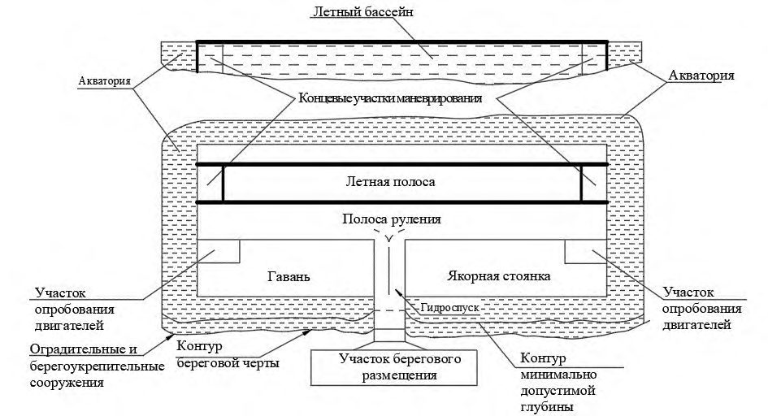
Рисунок А.2 -Схема организации земельного участка размещения речного гидроаэродрома
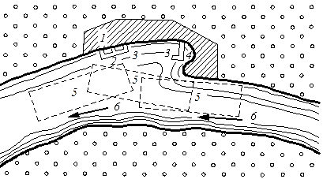
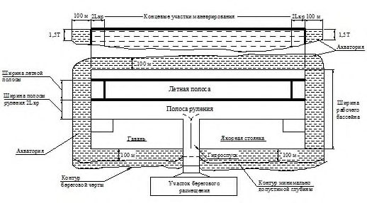
L кр - размах крыла гидросамолета; Т - осадка воздушного судна
Рисунок А.3 -Размеры акватории гидроаэродрома в границах рабочего бассейна по отметкам минимальной допустимой глубины
БПриложение Б. Расчет длины летной полосы
Длину летной полосы ( L ЛП) определяют по формуле
где 1,1 - коэффициент, учитывающий возможное завышение скорости в конце разбега при взлете;
L разб - длина разбега (по РЛЭ), м;
L проб - длина пробега (по РЛЭ), м;
L ман - длина участка летной полосы, необходимых для маневрирования гидросамолетов перед стартом и по окончании пробега; в случае прекращения взлета определяется по формуле
где R ц - радиус циркуляции гидросамолета на тяге собственных двигателей (по РЛЭ), м;
L кр - размах крыла гидросамолета, м;
L г - длина гидросамолета, м.
ВПриложение В. Расчет глубины летного бассейна
Минимальную глубину в пределах ЛП для конкретного ВС рассчитывают по формуле
где Г - глубина акватории;
Т - осадка воздушного судна в режиме плавания с максимальной взлетной массой;
Δ Т - увеличение осадки, Δ Т = 0,3 м; h 1 - запас на волнение, равный 0,5 максимальной высоты волны; h 2 - запас под килем воздушного судна; при слабом грунте (слой ила) h 2 = 0,15-0,3 м, при плотном грунте (песок, глина) h 2 = 0,3-0,4 м, при неразмываемом грунте h 2 = 0,5-0,6 м.
В случае если высота волн или приливы превышают 0,75 м, минимальная глубина акватории в пределах летного бассейна для гидроаэродромов класса А должна быть увеличена до 5,5 м.
ГПриложение Г. Состав плавсредств гидроаэродромов
Таблица Г.1 Состав плавсредств гидроаэродромов
| Тип катера | Количество плавсредств по классам гидроаэродромов, шт. | Количество плавсредств по классам гидроаэродромов, шт. | Количество плавсредств по классам гидроаэродромов, шт. | Количество плавсредств по классам гидроаэродромов, шт. | Количество плавсредств по классам гидроаэродромов, шт. |
|---|---|---|---|---|---|
| Тип катера | А | Б | В | Г | Д, Е |
| Стартово-командный катер (СКК) | 1 | 1 | 1 | 1 | 1 |
| Пожарный катер (ПЖК) | 1 | 1 | 1 | 1 | 1 |
| Поисково-спасательный катер (ПСК) | 1 | 1 | 1 | 1 | 1 |
| Нефтемусоросборщик (КНМС) | 1 | 1 | 1 | 1 | - |
| Катер оцепления (КО) | 2 | 2 | 2 | 2 | 2 |
| Буксирный катер (БУК) | 1 | 1 | 1 | 1 | 1 |
| Резервный катер (РК) | 1 | 1 | - | - | - |
| Разъездной скоростной катер (РСК) | 1 | 1 | - | - | - |
| Катер с байонетными мягкими бортами (КБМБ) | 1 | 1 | 1 | - | - |
| Примечание - Все катера морского обеспечения полетов должны иметь на борту радиостанции авиационной, морской и внутрипортовой связи . | Примечание - Все катера морского обеспечения полетов должны иметь на борту радиостанции авиационной, морской и внутрипортовой связи . | Примечание - Все катера морского обеспечения полетов должны иметь на борту радиостанции авиационной, морской и внутрипортовой связи . | Примечание - Все катера морского обеспечения полетов должны иметь на борту радиостанции авиационной, морской и внутрипортовой связи . | Примечание - Все катера морского обеспечения полетов должны иметь на борту радиостанции авиационной, морской и внутрипортовой связи . | Примечание - Все катера морского обеспечения полетов должны иметь на борту радиостанции авиационной, морской и внутрипортовой связи . |
Приложение Д Планировочные решения дневной маркировки летной полосы гидроаэродрома
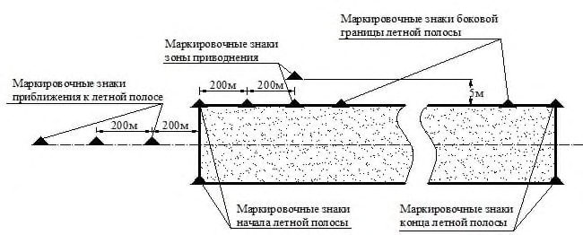
Примечание - Маркировочные знаки должны быть красного или оранжевого цвета.
Рисунок Д.1 - Схема установки маркировочных знаков летной полосы гидроаэродрома
Рисунок Д.2 - Схема установки светосигнального оборудования на гидроаэродроме
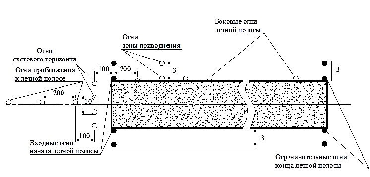
Рисунок Д.3 - Схема установки светосигнального оборудования на гидроаэродроме (без огней приближения)
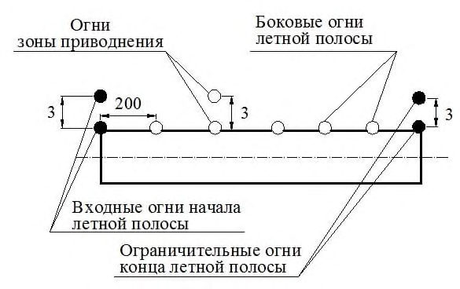
а
ЕПриложение Е. Конструктивные решения маркеров
Размеры в миллиметрах
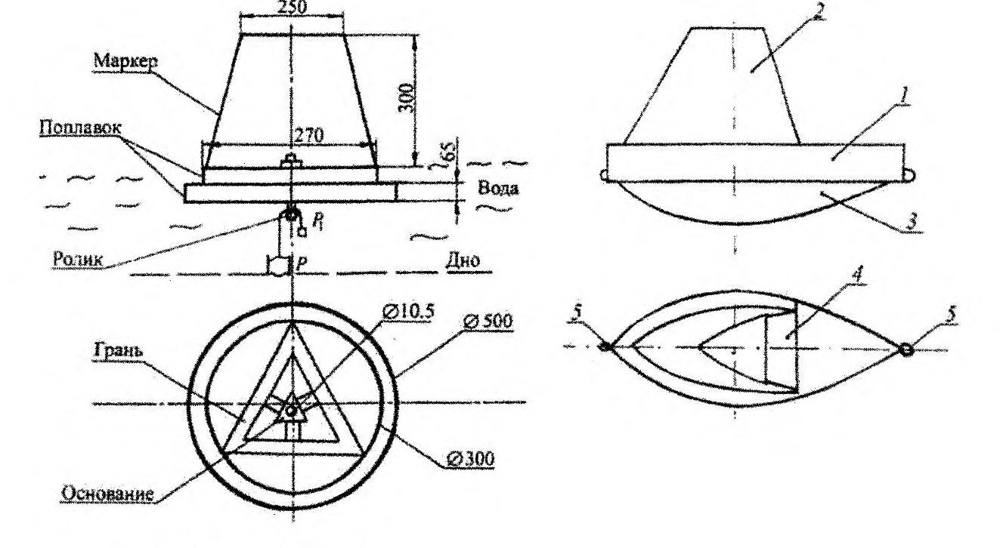
1 - поплавок; 2 - надстройка; 3 - киль; 4
- световозвращающий элемент;
5 - кольцо для замаливания предыдущего и последующего поплавка-маркера
Рисунок Е.1 - Конструкция маркеров для гидроаэродрома классов Г, Д, Е ( а ) и гидроаэродрома, самоориентирующегося по ветру и (или) волнению ( б )
Предусматривают маркеры из легкого материала (пенопласта, пробки).
Крепление маркеров осуществляют с помощью троса к мертвым якорям или с помощью груза-якоря массой 8 кг и фалы, продетой через ролик, установленный в днище поплавка, и связанной с одного конца с якорем, а с другого - с отвесом массой 1 кг.
Площадь каждой грани плоскости - 650 см² .
На плаву общая высота маркера от поверхности воды - 0,4 м.
Приложение Ж
Планировочное решение якорной стоянки и расчет границ
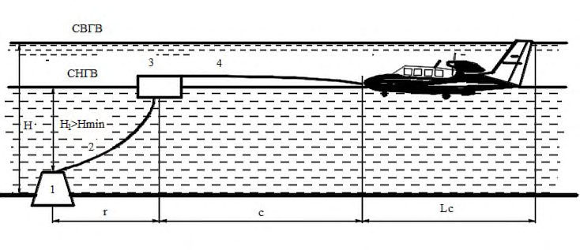
1 - мертвый якорь; 2 - бридель (якорная цепь, канат или трос);
3 - бочка; 4 - якорный ус; H - самый высокий горизонт воды (СВГВ);
H 1 - самый низкий горизонт воды (СНГВ); H min - низкий уровень воды
Примечание - Длину бриделя принимают равной 1,5-2 глубинам водоема в месте установки якоря.
Рисунок Ж.1 -Схема якорной стоянки
Границы якорной стоянки - окружность (с центром в месте установки якоря) радиусом, определяемым по формуле
где r - радиус свободного хода бочки (принимается равным 1,75 Н ); с - длина якорного уса ВС (принимают 4-7 м);
L c - длина ВС.
СП 1325800.2020
В качестве мертвого якоря применяют железобетонный якорь круглой или многогранной формы с наклонными боковыми гранями и выемкой в днище (рисунок Ж.2).
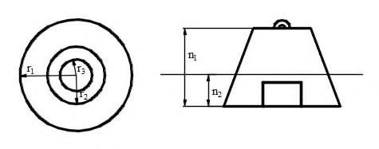
r 1 - радиус основания мертвого якоря; r 2 - радиус верхней части мертвого якоря; r 3 - радиус выемки в днище мертвого якоря; n 1 - высота мертвого якоря; n 2 - заглубление основания мертвого якоря в грунте
Рисунок Ж.2 -Мертвый якорь
Размеры железобетонного мертвого якоря приведены в таблице Ж.1
ТаблицаЖ.1 Размеры железобетонного мертвого якоря
| Класс гидроаэродрома | Класс гидроаэродрома | Класс гидроаэродрома | Класс гидроаэродрома | Класс гидроаэродрома | Класс гидроаэродрома | Класс гидроаэродрома | Класс гидроаэродрома | Класс гидроаэродрома | |
|---|---|---|---|---|---|---|---|---|---|
| А, Б | А, Б | А, Б | В, Г | В, Г | В, Г | Д, Е | Д, Е | Д, Е | |
| Угол внутреннего трения грунта*, градус | Угол внутреннего трения грунта*, градус | Угол внутреннего трения грунта*, градус | Угол внутреннего трения грунта*, градус | Угол внутреннего трения грунта*, градус | Угол внутреннего трения грунта*, градус | Угол внутреннего трения грунта*, градус | Угол внутреннего трения грунта*, градус | Угол внутреннего трения грунта*, градус | |
| 10 | 15 | 20 | 10 | 15 | 20 | 10 | 15 | 20 | |
| r 1 | 3,5 | 3,0 | 2,6 | 2,6 | 2,25 | 2,0 | 2,0 | 1,7 | 1,5 |
| r 2 | 1,8 | 1,5 | 1,3 | 1,35 | 1,20 | 1,10 | 1,0 | 0,85 | 0,75 |
| r 3 | 1,5 | 1,3 | 1,1 | 1,15 | 1,0 | 0,9 | 0,9 | 0,75 | 0,65 |
| n 1 | 3,7 | 3,2 | 2,7 | 2,8 | 2,4 | 2,0 | 2,2 | 1,85 | 1,6 |
| n 2 | 1,4 | 1,2 | 1,0 | 1,0 | 0,9 | 0,8 | 0,8 | 0,7 | 0,6 |
Окончание таблицы Ж.1
| Класс гидроаэродрома | Класс гидроаэродрома | Класс гидроаэродрома | Класс гидроаэродрома | Класс гидроаэродрома | Класс гидроаэродрома | Класс гидроаэродрома | Класс гидроаэродрома | Класс гидроаэродрома | Класс гидроаэродрома | |
|---|---|---|---|---|---|---|---|---|---|---|
| Параметры | А, Б | А, Б | А, Б | В, Г | В, Г | Д, Е | Д, Е | Д, Е | Д, Е | |
| мертвого якоря, м | Угол внутреннего трения грунта, градус* | Угол внутреннего трения грунта, градус* | Угол внутреннего трения грунта, градус* | Угол внутреннего трения грунта, градус | Угол внутреннего трения грунта, градус | Угол внутреннего трения грунта, градус | Угол внутреннего трения грунта, градус | Угол внутреннего трения грунта, градус | Угол внутреннего трения грунта, градус | |
| 10 | 15 | 20 | 10 | 15 | 10 | 15 | ||||
| 20 | ||||||||||
| 20 |
Глубина рабочего бассейна над верхом якоря в месте его установки должна быть не менее указанной в 6.2.3.
Элементы якорной стоянки рассчитывают из условия их равнопрочности с носовыми утками ВС. Расчетное усилие рассчитывают по формуле
где G н - взлетный вес воздушного судна.
Бочка (швартовочный буй) предназначается для поддержания верхнего конца бриделя на плаву.
Запас плавучести бочки должен быть не менее 15 %, а максимальное возвышение верха бочки над водой не должно превышать 0,5 м.
Снаружи бочку для предохранения ВС от повреждения при ударах обвертывают мягким материалом (или применяют швартовочный буй из мягкого материала, например виниловой пластмассы).
Приложение И
Планировочное решение установки гидросамолета у причала
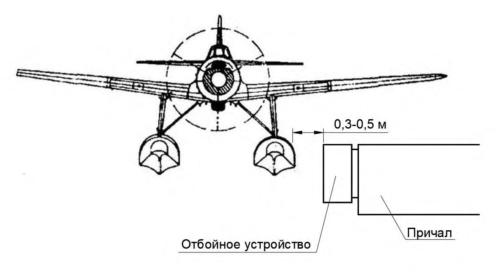
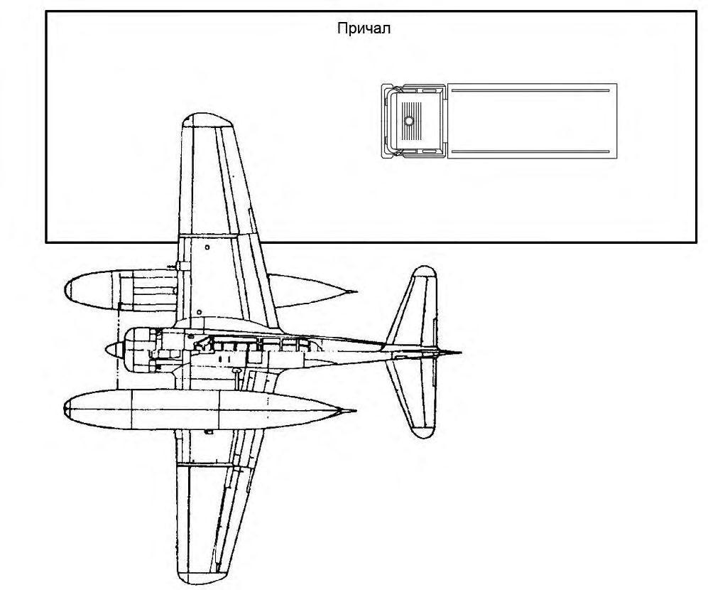
Примечание - Запас между бортом поплавка гидросамолета и отбойными устройствами причала, м, должен составлять:
- 0,5 - для гидроаэродромов класса А;
- 0,4 - для гидроаэродромов класса Б;
- 0,3 - для гидроаэродромов классов В, Г, Д, Е.
Рисунок И.1
Приложение К Планировочное решение размещения на акватории гидроаэродрома временного и подвижного оборудования средств связи и радиотехнического обеспечения полетов
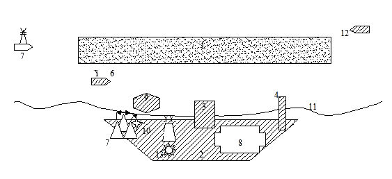
1 - летная полоса; 2 - участок берегового размещения; 3 - гидроспуск; 4 - причал для плавсредств; 5 - командно-диспетчерский пункт; 6 - стартовый командный пункт на катере; 7 - отдельная приводная радиостанция, автоматический радиопеленгатор, радиолокационная станция; 8 - места стоянок;
9 - якорная стоянка; 10
11 - береговая черта; 12 - катер оцепления; 13
- кодовый неоновый светомаяк (при необходимости); - метеоплощадка
Рисунок К.1 -Схема расположения временного и подвижного оборудования и средств связи и радиотехнического обеспечения полетов
К.1 При оборудовании гидроаэродрома средствами связи и РТО в подвижном варианте (на плавсредствах) на гидроаэродроме обозначаются места для их размещения. Установка (монтаж) и ввод средств связи и РТО в эксплуатацию проводятся силами эксплуатанта средств связи и РТО в соответствии с технической документацией.
В отдельных случаях, когда по условиям местности рекомендуемое размещение средств связи и РТО невозможно, допускаются отступления от рекомендуемого размещения с таким расчетом, чтобы обеспечить устойчивую работу средств связи и РТО в секторах с наибольшей интенсивностью полетов (в том числе в направлениях посадочных курсов).
К.2 Передвижное рабочее место руководителя полетов предусматривается на СКК, который оборудуется в зависимости от класса гидросамолетов, базирующихся на гидроаэродроме, требуемого минимума для посадки (взлета) гидросамолетов, характеристик бортового оборудования, местных особенностей на гидроаэродроме.
Библиография
- [1] Федеральный закон от 27 декабря 2002 г. № 184-ФЗ «О техническом регулировании»
- [2] Федеральный закон от 30 декабря 2009 г. № 384-ФЗ «Технический регламент о безопасности зданий и сооружений»
- [3] Федеральный закон от 19 марта 1997 г. № 60-ФЗ «Воздушный кодекс Российской Федерации»
- [4] Федеральный закон от 3 июня 2006 г. № 74-ФЗ «Водный кодекс Российской Федерации»
- [5] Федеральный закон от 10 января 2002 г. № 7-ФЗ «Об охране окружающей среды»
- [6] Федеральный закон от 9 февраля 2007 г. № 16-ФЗ «О транспортной безопасности»
- [7] Постановление Правительства Российской Федерации от 30 декабря 2006 г. № 882 «Об утверждении Правил использования поверхностных водных объектов для взлета, посадки воздушных судов»
- [8] Постановление Правительства Российской Федерации от 30 декабря 2006 г. № 844 «О порядке подготовки и принятия решения о предоставлении водного объекта в пользование»
- [9] Постановление Правительства Российский Федерации от 2 декабря 2017 г. № 1460 «Об утверждении Правил установления приаэродромной территории, Правил выделения на приаэродромной территории подзон и Правил разрешения разногласий, возникающих между высшими исполнительными органами государственной власти субъектов Российской Федерации и уполномоченными Правительством Российской Федерации федеральными органами исполнительной власти при согласовании проекта решения об установлении приаэродромной территории»
- [10] Приказ Министерства транспорта Российской Федерации от 4 марта 2011 г. № 69 «Об утверждении Федеральных авиационных правил «Требования к посадочным площадкам, расположенным на участке земли или акватории»
- [11] Приказ Министерства транспорта Российской Федерации от 25 августа 2015 г. № 262 «Об утверждении Федеральных авиационных правил «Требования, предъявляемые к аэродромам, предназначенным для взлета, посадки, руления и стоянки гражданских воздушных судов»
- [12] Приказ Министерства транспорта Российской Федерации от 20 октября 2014 г. № 297 «Об утверждении Федеральных авиационных правил «Радиотехническое обеспечение полетов воздушных судов и авиационная электросвязь в гражданской авиации»
- [13] Приказ Министерства транспорта Российской Федерации от 3 марта 2014 г. № 60 «Об утверждении Федеральных авиационных правил «Предоставление метеорологической информации для обеспечения полетов воздушных судов»
- [14] СП 11-102-97 Инженерно-экологические изыскания для строительства
- [15] СП 11-103-97 Инженерно-гидрометеорологические изыскания для строительства
- [16] СП 11-104-97 Инженерно-геодезические изыскания для строительства. Часть III. Инженерно-гидрографические работы при инженерных изысканиях для строительства
- [17] СНиП 3.07.02-87 Гидротехнические морские и речные транспортные сооружения
- [18] ВНТП 1-85/МГА Ведомственные нормы технологического проектирования аэропортов
- [19] ВНТП 5-85/МГА Ведомственные нормы технологического проектирования грузовых комплексов аэропортов
- [20] ВНТП 11-85/МГА Ведомственные нормы технологического проектирования авиационно-технических баз в аэропортах
- [21] ВНТП 6-85/МГА Ведомственные нормы технологического проектирования объектов авиатопливообеспечения аэропортов гражданской авиации
- [22] ВСН 7-86/МГА Нормы проектирования объектов управления воздушным движением, радионавигации и посадки
- [23] СО 153-34.21.122-2003 Инструкция по устройству молниезащиты зданий, сооружений и промышленных коммуникаций